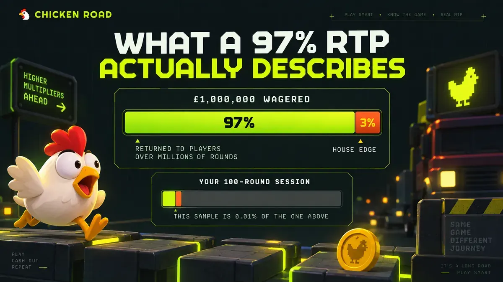

Data & RTP
What Is RTP in Slots and Crash Games? A Plain-English Guide
RTP is the share of all stakes a game returns across millions of rounds — a long-run model average, not a refund rate for your session. What the number measures, what it can't, and why a high RTP alone doesn't prove a game is fair.
🔞 18+ only · Real-money gambling

A 98% RTP reads like a promise: stake £100, get £98 back. Then a session ends at zero and the same number starts to look like marketing. Both readings are wrong, and the distance between them is where nearly all confusion about return to player begins.
Why Is RTP Quoted Everywhere and Explained Almost Nowhere?
Because it is a regulatory disclosure that was never designed as player-facing education. Licensing regimes require the figure to be available to players — the UK Gambling Commission's technical standards oblige licensed operators to make game information, including return to player, accessible before play. Nothing in that obligation requires anyone to explain what the number means.
So the figure gets published, repeated by affiliate sites, and read as a personal refund rate. It is not one. RTP describes the behaviour of a mathematical model across a sample size no individual player will ever come close to producing, which is why it can be completely accurate and still tell you nothing useful about tonight.
This guide covers what the number measures, what it cannot measure, and why a high RTP is not on its own evidence that a game is fair. It sits under How Crash Games Actually Work, the full guide to the mechanics behind crash games.
What Does RTP Actually Measure?
RTP is the proportion of total wagered money a game is modelled to return to players over its full lifetime of play. The figure comes from the game's own maths model, usually verified by simulating millions of rounds rather than by observing real play.
Work through a 97% model, used here purely as an illustration and not as any game's real figure. Across one million £1 bets, the model expects roughly £970,000 to come back to players in total, with about £30,000 retained. That retained slice is the house edge — the operator's long-run share, and simply 100% minus the RTP. The two numbers are one number, expressed from either side, as House Edge Explained covers in full.
Two properties of RTP surprise people. It does not change with your stake size: betting £1 or £50 gives the same expected percentage return. And it belongs to the game, not the casino — the same title carries the same RTP wherever it is offered, unless the provider ships configurable versions, which some do.
Why Doesn't RTP Predict Your Session?
Because a session is a statistically meaningless sample next to the population RTP describes. A hundred rounds is 0.01% of a million-round simulation, and at that scale results scatter far and wide around the average in both directions.
That scatter is not a flaw in the model. It is the model. If every session returned exactly 97%, the game would be a slow, predictable fee rather than gambling, and nobody would play it. The long-run average only asserts itself across an aggregate of every player's rounds combined — which is the level an operator's business plan works at, and never the level an individual player experiences.
There is a related distinction worth holding onto: theoretical RTP versus actual RTP. Theoretical RTP is the model's designed figure. Actual RTP is what a given sample of real rounds happened to return, and over any short window it can land well above or well below. Only one of those two numbers is ever advertised.
Illustrative model RTP | House edge | Modelled return per £100,000 wagered | What it says about your next 50 rounds |
|---|---|---|---|
94% | 6% | ~£94,000 | Nothing |
96% | 4% | ~£96,000 | Nothing |
98% | 2% | ~£98,000 | Nothing |
Illustrative RTP values only — these are not Chicken Road's figures or any specific game's figures. The right-hand column is the point of the table.
What's the Difference Between RTP and Volatility?
RTP sets how much comes back over the long run; volatility sets how it arrives. Volatility describes how often wins land and how large they tend to be, and two games can share an identical RTP while feeling nothing alike.
Picture two models both built to 96%. One returns small amounts constantly, so a budget drains slowly and sessions rarely swing hard. The other pays rarely and heavily, so most sessions end below water and occasional ones spike. Same long-run average, completely different experience, completely different bankroll requirement.
Crash games make this visible rather than burying it in a paytable, because Chicken Road, built by InOut Games (the studio behind the game's crash mechanic), exposes four difficulty tiers instead of one fixed risk profile. Selecting a tier is selecting a volatility profile. The full treatment is in Slot & Crash Game Volatility Explained.
What Is Chicken Road's RTP?
The published figure belongs to the game's own documentation, and it is maintained on the Chicken Road hub page alongside the standard RTP disclaimer, so it can be updated in one place rather than restated across the blog. Check it there, or in the game-info panel of whichever operator you play at.
A second question sits underneath the first: whether the RTP is identical across Easy, Medium, Hard and Hardcore, or varies by tier. Many games hold one theoretical return across every risk setting and change only the distribution of outcomes, but that is a fact to verify in the provider's own documentation rather than assume.
If you find an RTP figure for any game on an affiliate site with no source attached, treat it as unverified. Numbers get copied between sites for years after a provider has changed a model.
Does a High RTP Mean a Game Is Fair?
No — RTP describes the payout model, while fairness depends on whether the game's outcomes are genuinely random and independently tested. A game could advertise 98% and still be worthless if the randomness behind it were manipulable, and the advertised figure alone gives you no way to tell.
What closes that gap is independent certification: a testing laboratory examining the random number generator (the software component producing each outcome), confirming the outputs are statistically random, and checking that the live game's actual behaviour matches its advertised RTP. That last check is the link between the two ideas — certification is partly what makes an RTP claim mean anything.
Recognised labs in the category include eCOGRA, iTech Labs and GLI, named here as examples of the category rather than as a claim about any particular provider. For what certification actually examines, see What Does "Certified RNG" Actually Mean?, and for how the fairness question applies to this game specifically, the fair-play and legitimacy breakdown addresses it directly.
What Do Players Get Wrong About RTP?
Reading it as a refund rate. Expecting 97% of a deposit back over an evening guarantees disappointment. RTP is a comparison tool between games, not a budget calculator.
Believing a game is "due" after a low-return run. Rounds are independent, so nothing balances the average back toward RTP on your behalf. That reasoning error is unpacked in Crash Game Strategy Myths.
Assuming bigger bets improve the percentage. Stake size has no effect on expected return; it only changes how fast a bankroll moves.
Treating a demo run as an RTP measurement. Demo mode uses no real money, and a few dozen free rounds measure nothing about either theoretical or actual RTP.
Trusting an unsourced figure. If no provider page or operator game-info panel backs the number, it is a rumour with a decimal point.
Frequently Asked Questions
If a game's RTP is 97%, how many rounds would I need to play to actually see 97%?
Far more than a human plays — the figure is modelled across millions of rounds, and meaningful convergence needs a sample of that order. Across a few thousand rounds, returns well above or well below the theoretical figure remain entirely ordinary outcomes.
Can an operator change a game's RTP?
Some providers ship configurable RTP versions of the same title, which operators can select between, though many games have one fixed figure. Where versions exist, the operative figure appears in the operator's own game-info panel rather than in general listings, so check it there rather than on a third-party page.
Does a higher difficulty tier have a lower RTP?
Not necessarily. Difficulty adjusts volatility — the size and frequency of outcomes — and many games hold a single theoretical return across every tier. Check whether the disclosed figure is stated once for the game or separately per tier before assuming either.
Why do published RTP figures sometimes differ between two sites covering the same game?
Usually because one of them copied an outdated figure, or because the game has multiple configurable versions and each site saw a different one. Treat the provider's own materials or the operator's in-game info panel as authoritative, and treat unsourced affiliate figures as unverified.
Is a 96% RTP game better value than a 98% one?
On long-run expected return, the 98% model is mathematically better by two percentage points of every amount wagered. Over a realistic session, though, volatility affects your experience far more than a two-point difference in theoretical return, so the comparison rarely decides anything on its own.
So What Should You Actually Do With an RTP Figure?
Use it to compare games against each other, and ignore it entirely as a forecast of your own session. The concrete next step is to find the RTP where it is authoritative — the provider's documentation or the operator's in-game info panel — rather than from a listing site, and to check whether the game states one figure or a figure per risk setting.
If you play for real money, set the amount before you start and treat it as an entertainment cost. 18+. Free, confidential support is available at BeGambleAware.org and GamCare.org.uk.
RTP is one of five mechanics covered in the full guide to how crash games actually work; its mirror image is explained in House Edge Explained, and the property it is most often confused with in Slot & Crash Game Volatility Explained. For whether the number can be trusted in the first place, What Does "Certified RNG" Actually Mean? covers independent testing, while the game's own disclosed figure lives on the Chicken Road hub.